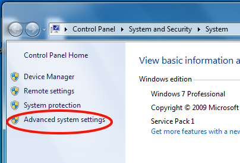
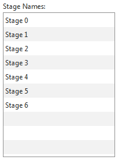
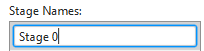
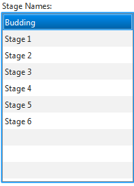

StageCast User Guide
08/29/2014
Table of Contents
1 Introduction
1.1 Purpose
The purpose of this document is to serve as a handbook for using the StageCast program, as well as a brief explanation of the technology behind it. This document is intended for general use and does not get into the details of how the program code is organized. If you are interested in modifying the program you can consult Appendix A↓ for a discussion of how to access the program’s source code and where to find the API documentation. Note: This document and the code of the program it describes are in the public domain and available for use and modification without restriction [A] [A] Disclaimer for the program’s source code: USDA ARS MAKES NO REPRESENTATION NOR EXTENDS ANY WARRANTIES OF ANY KIND, EITHER EXPRESS OR IMPLIED, OF MERCHANTABILITY OR FITNESS OF THE TECHNOLOGY IN THIS PROGRAM FOR ANY PARTICULAR PURPOSE, OR THAT THE USE OF THIS TECHNOLOGY WILL NOT INFRINGE ANY PATENT, COPYRIGHT, TRADEMARK, OR OTHER INTELLECTUAL PROPERTY RIGHTS, OR ANY OTHER EXPRESS OR IMPLIED WARRANTIES. . This is because they were created by employees of the United States Department of Agriculture as part of their official duties.
1.2 Audience
Although meant to be a general usage guide and not a technical or scientific document, to access the full functionality of the program the user must have some knowledge of relevant biology and statistics, or at least the willingness to learn as they go along. For many users, the most technical aspect of dealing with the program will be creating useful input data and choosing useful options on the statistics screen. The main part of this document does not provide significant guidance on these points. However, there are appendices included in this document that are technical in nature and cover the math being used, the file formats the program can read, and even a short guide on how to edit the source code of the program itself to fix bugs or change it to suite your needs.
1.3 Methodology
Briefly, the fundamental function of the algorithm behind StageCast is to read weather data and records of organismal growth and produce a statistical model which can be used to describe or forecast temperature limited stage specific development rates. It does this by finding the total heat (called degree days) required over an organism’s development time. In many organisms with discrete, periodic life cycles such as trees and insects, their current development state is a function of the total number of degree days they’ve been exposed to. The model created by the StageCast algorithm is simply a statistical representation of the number of degree days needed for a population to enter into a given developmental stage, based on previously observed developmental patterns.
1.4 Overview
This document is organized into sections which will explain setting up the program and its contents, one tab screen at a time. StageCast is designed so that the average work flow will move through the tabs in a left-to-right order and the document reflects this organization. This is not to say that every operation will span multiple tabs, but if you do need to use more than one tab it will probably follow this order. As stated previously, this document is a user’s guide rather than technical documentation. As such, it will not go into details about the underlying algorithms behind the program or how to modify the program yourself. However, it’s important to emphasize that StageCast is an open-source program and that you are free to use, modify, or repurpose the source code for your own use as desired. There is a set of technical documents which provide help on how to do this and they are discussed in Appendix A↓. The Appendix also contains information on the input and output file formats used by the program. StageCast attempts to run without bothering the user with technical details like these; however, if you wish to take the output data and parse it yourself, it may be useful to have a reference on how the files are structured.
2 Set-up
This section will cover how to install programs needed by StageCast as well as showing how to run StageCast once everything has been set up.
2.1 Installing Java
The StageCast program itself (the Graphical User Interface (GUI) elements which you will see and directly interact with) depends on a programming language called Java being installed on your machine. The version of Java must be version 7 update 6 or later. You can check for Java by opening up the command line and typing “java -version”. If something like “java 1.7.0_27” comes up, that means that you’re running Java version 7, update 27. Versions higher than 7 should work correctly, but versions earlier than 7 update 6 will fail to run because earlier versions of the language do not support all of the features StageCast requires.
To install or update Java, you can download the installer packages from the Oracle corporation [B] [B] http://www.oracle.com/technetwork/java/javase/downloads/index.html which owns and maintains the Java language. At the time of this writing, the latest available version of Java is version 8 update 5. An open-source implementation of Java, also maintained by Oracle, is available at the openJDK website [C] [C] http://openjdk.java.net/. The downloads from the openJDK project are compatible with the official Oracle releases, but are licensed under the GNU General Public License (GPL).
Java is distributed in two forms, the JRE and the JDK. Either form will allow you to run StageCast; however, the JDK is necessary if you wish to modify the code yourself as discussed in Appendix C↓. This manual downloading is necessary on Windows. However, if you use a Linux distribution, consult the documentation or forums for the best way to get and maintain Java on your machine.
2.2 Installing R
R is a user-supported programming language used for statistical calculations. Unlike languages such as C or Java, it is not compiled, but instead is contained in script files, plain text files which can be opened with Windows Notepad or another text editor. These scripts are what StageCast uses to create models, run statistics, and produce figures. R needs to be installed in a location where the StageCast program can find it. R is completely free and open-source under the GNU GPL and is available for download from the project’s website [D] [D] http://www.r-project.org/. Much like Java, Windows users are likely to need to follow the directions on the website to manually download and install R and Linux users should consult their distribution’s documentation on the subject.
The important thing about installing R, especially on Windows, is that it needs to be in the system’s path variable so that other programs can see it. Specifically, StageCast will try to call R from the command line, which means that, on Windows, the folder containing the executable files “R” and “Rscript” need to be in the system path. To do this, find where R is installed on your system and then find the executable files. For example, on a 64-bit Windows 7 machine, the default location is “C:\Program Files\R\R-3.0.1\bin”. The R version does not have to be 3.0.1 and StageCast should work with any recent version of R. On Windows 7, to add this directory to the path you would follow these steps:
-
Click on the start menu icon in the lower left-hand corner of the screen.
-
Right-click on the “Computer” menu item on the right-hand side of the start menu.

-
Click on “Properties” in the menu that comes up.
-
Click on “Advanced system settings” in the left menu on the screen which opens.
 -
Press the “Environment Variables” button.
- In the bottom list, scroll down until you see a variable named “Path”
-
Select “Path” and press the “Edit” button.
It should be noted that this and other figures have part of the filepath blocked out. The black bar covers the user name on the computer the images were taken on. Every computer will have a slightly different path and you should see your own user name in place of the black bars. -
You will see a long list of different locations on your hard drive. Go to the end of this list, add a “;” to the end to mark the start of a new entry, and then type the path for the folder containing the R executable files.
- Double-check that there are no typos in what you just entered and then restart the computer.
-
Finally, to check that things are in order, open up the command prompt and type “R”. If it enters the text-based R environment you have successfully installed R and StageCast will be able to find it and use it.
2.3 Starting Up
This section covers the initial process of downloading StageCast and running it for the first time. The program can be downloaded as a .zip file from [URL]. After saving it to your computer, follow these steps.
First, find where it’s located on your computer. In this example, it’s been downloaded to the Desktop.
Next, right-click on the file and click on “Extract All...”.
In the window which pops up, choose the location you want the files to go when they’re extracted and then click “Extract”.
Find the folder you created in the last step. In the example the files have been extracted to the Desktop as well, so now the Desktop looks like this:
Open the folder. You might find a second folder inside the first with the same name, click to open this one and you should see the main contents. In the example, opening the folder “StageCast” reveals another folder named “StageCast” inside of it.
Inside this second folder is where the program itself is.
The contents of your folder may look different depending on if data files or folders are included in the .zip file. However, all you need is the file named “PhenologyModel.jar”. To run the program, double-click on “PhenologyModel.jar” and the program should start. You will notice that, as it does so, it creates a variety of folders and files which were not present originally.
3 Files
The “Files” tab is where input datasets can be loaded and viewed in StageCast. These are the datasets which will be used in other tabs to form the model and produce figures and forecasts. Any change you make in this tab will be immediately visible to all the other tabs in the program without needing to restart. Like all other tabs, the contents of this window will be preserved between sessions. So a dataset which you load in one session will not need to be reloaded in the next.
The first and most important elements in this tab are the two drop-down menus near the top of the screen and the “New” and “Load” buttons directly below them. On the left, StageCast shows the organism datasets and on the right it shows the weather datasets.
The drop-down menus show the datasets which have been loaded by the program.
The buttons below these drop-down menus provide two related but distinct functions. By pressing the “New” button, you will be prompted to select an input file (described in Appendix B.1↓) which holds the raw data. An example of this type of file would be data collected in the field over a growing season. These raw data files are then parsed into a format (described in Appendix B.2↓) more easily understood by the program, and saved to disk. On the other hand, the “Load” button does not take raw data as input. Instead, you will be prompted to select a file to load which is already in the format expected by StageCast. An example of when this would be needed is a dataset which had been loaded and modified by a colleague and then sent to you. At the end of both processes, the program will have loaded and recognized a dataset and this new dataset will show up in the appropriate drop-down menu.
On the left side, below the menu and buttons discussed above, are three information displays.
First is a box showing how many growth stages are in the currently selected organism dataset. Each organism dataset can hold multiple sets of organismal data (e.g., differing sub-species of an insect or varieties of almond trees planted in a single grove), but they each must have the same number of growth stages. If the organism dataset does not contain a consistent number of stages, incorrect data will be produced.
Below the box showing the number of stages is a box, Members, which shows the number of different sub-species or varieties in the currently selected organism dataset. As previously mentioned, as long as they have the same number of growth stages, each organism dataset can record as many different types of organisms as desired.
Below this box is a list showing the names of the organisms in the currently selected dataset. The figure below shows the organisms contained in a dataset pertaining to almond varieties.
As outlined in Appendix B.1↓, the name of each organism must be recorded in the raw input data file. StageCast will read this and sort them accordingly. The organisms named in this list will be available to you in other tabs. If you do not see a name you are expecting, it could be an indication that something has gone wrong. Perhaps the wrong file was used or it was not correctly formatted. Of course, the program itself could have a bug. In which case, the authors of this software would greatly appreciate it if you file a bug report (or even a fix) with the project as described in Appendix C↓.
On the right side of the screen, below the menu and buttons, is another list which shows the names of the different growth stages for the currently selected organism dataset.

By default, these names will be of the form: stage1,stage2,...,stageN. However, this list does allow you to set your own names for the stages. The names of the stages will show up in figures so it could be useful to change them to something which more directly reflects the specific organism of interest. To change the name of a stage, double-click on the item you want to rename...

...and then type in the new name.
Once you have finished typing, submit your new name by pressing the <Enter> key. This list can be a little finicky and might not record your change if you just click out of the box instead of pressing <Enter>. StageCast will remember the changes you make and save them from session to session. These changes will even be present if the dataset is loaded into another user’s StageCast session using the “Load” button, as described above.

4 Model
The model tab is the heart of StageCast. In this tab, you are able to create predictive models from organism and weather datasets and then compute various statistics. The model parameters estimated in this tab will be used in the graph and forecast tabs as well. Model creation involves two windows, the model tab in the main window, but also a pop-up window which is used to create the individual models themselves. These two areas will be covered in separate sections below.
4.1 Main
The first thing to note about the “Model” tab is that it is divided into two areas, an area on the left for handling model creation and an area on the right for running statistical tests against the models.
Starting with the area on the left, the first element is the drop-down menu near the top of the screen.
This menu lists all previously created models.
Selecting models from this list lets you view information about that model. The “New” button to the right of the menu is for creating a new model. On pressing the button, a new screen (described below) will come up and allow you to configure and create the model. Once you have created a new model using this window, it will show up in the drop-down menu. NOTE: Depending on the options chosen for model creation, the algorithm may take some time to run and the program will become temporarily unresponsive during this time. Seeing the program listed as “unresponsive” or grayed out by Windows is normal and no action is needed on your part. StageCast will return to normal operations once the algorithm has finished.
Below the menu and “New” button are a variety of displays which list information about the currently selected model. The top text box displays the algorithm used to generate the selected model.
Below the algorithm listing are four text boxes.
The two text boxes on the left display the organism and weather datasets used in the model.
On the upper right, the model’s Akaike Information Criterion is shown.
Lastly, in the bottom right is the negative log likelihood.
On the lower left of the screen is a list of the organisms used for the model. An organism dataset may hold many different organisms and not all of these organisms have to be used for model creation, which necessitates a specific list.
Next to the list of organisms is a list of the estimated parameter values for the model. These values are the true core of StageCast and are used in other parts of the program for statistics, graphing, and forecasting.
Moving on to the statistics options available on the right portion of the “Model” tab. The first thing to notice is the cluster of menus and text fields at the top.

The three drop-down menus allow you to choose a model, organism dataset, and weather dataset. By default, StageCast suggests using the same datasets the selected model was constructed with but, it will accept any combination of models and datasets.
To the right of the menus are text boxes where you can specify how many iterations to use in the bootstrapping algorithm and what value to use for alpha in the calculations.
The bootstrapping algorithm is somewhat slow, so be aware that it make take a long time to complete, possibly several hours depending on the capabilities of your computer and how many iterations you have it set for. Like the model creation script mentioned above, the program will appear to be unresponsive while it’s waiting for the script to finish. This is to be expected and it will return to normal operation once the bootstrapping algorithm has finished. The bottom text field is a static display of the algorithm used to create the model and can not be edited.
The middle portion of the right side of the screen has four text boxes in a grid.
These text boxes list the G-Squared and Chi-Squared values, as well as their P-values. The left column shows the Chi-Squared values (shown as X-Squared on the screen).
And the G-Squared values are on the right.
The confidence intervals for both these values are located below them and are arranged so the lower bound is shown in the left box and the higher bound is shown in the right.
Below these boxes is a table showing the confidence intervals for the model parameters. The central column contains the base parameter values stored by StageCast and the left-hand column displays the lower bound for these parameters which were found through bootstrapping, and the right-hand column displays the upper bound for the parameters.
4.2 Model Creation Window
The model creation window, as you’ve probably already gathered, is the screen that allows you to create a new model. It is opened by clicking the “New” button in the “Model” tab in the main window.

The window which opens will look like this:
On the top of the screen are two drop-down menus. These allow you to select an organism and weather dataset to use. Unlike in the files tab, however, there is no ability to add a new dataset on this screen. So if you need a new organism or weather dataset you will have to add it through the “Files” tab in the main window and then re-launch the model creation window.
Below the two menus are two text fields. The left text field just lists the total number of growth stages in the currently selected organism dataset.
The right text field shows the name the model will be saved under. By default the model is just named based on the date and time of its creation but you can enter any name you wish.
The center of the screen contains two controls, one to manage organisms and one to manage the growth stages.
As mentioned above, a single organism dataset may contain multiple organisms, and the left control lists all organisms which are part of the data file. However, you do not have to use every possible organism in your model. This control allows you to check the organisms you would like to include and un-check the ones you wish to exclude from the model.
The control on the right is somewhat more involved as it lets you reconfigure the very nature of the model. By default, for “N” stages the model will have “N-1” growth stage parameters and one variability parameter (see Appendix A.1↓) and the growth stages will be in ascending order; however, this can be changed. By dragging and dropping one stage name onto another, you will see that they now share a row. This indicates that the model will combine the two growth stages into a single parameter; this feature is useful when exploring various model complexities. The order of the stage names as they are arranged vertically determines the order in which they will be processed (e.g. the top-most stage name will become model parameter 1) but the specific order of the stage names when they share a row does not matter. Using this method, you can sometimes get better results with a sparse dataset. In the figure below, you can see that the stages “Budding”, “Stage 1”, and “Stage 2” have been combined into a single stage which will become model parameter 1. Stages “Stage 5” and “Stage 6” have also been combined into what will become model parameter 4.
The bottom two controls allow you to choose the algorithm used to produce the model and provide optional control over the model’s starting parameters.
On the bottom left, you will find a list of possible algorithms to use when constructing the model. The default algorithm is Nelder-Mead. This algorithm is somewhat on the slow side, but offers good robustness over complex likelihood surfaces. Of course, as a default it may not meet your needs for the particular datasets being used for the model. As such, there are a further four options to chose from. The selection of algorithms is based on what the underlying language, R, supports for these operations. If you have tooltips enabled you can hover your mouse over each algorithm to see a descriptive tooltip.
The last control, located in the bottom right corner, is a wholly optional control which allows you to pick starting points for the algorithm. The model creation algorithm in StageCast is designed to run on auto-pilot, so to speak, and produce reasonable estimates using nothing more than the raw data you pass to it. However, this is an estimation only and is not guaranteed to find the truly optimal solution. In some cases, the algorithm might produce a better model if you manually enter in starting parameters rather than letting it estimate them on its own. This is completely optional, however, and the scripts are robust enough that the default settings usually give an acceptable outcome. It is recommended that you complete the “Graph” step prior to returning here to modify central conditions. NOTE: Like the control that lets you change the names for the growth stages in the “Files” tab, you should submit your entries in this list through the <Enter> key rather than just clicking outside of the field.
Once the settings are satisfactory, the model can be created by pressing the “Model” button in the lower right corner. If you decide that you do not want to create a model, pressing the “X” in the top right corner of the screen will close the window without creating a model or making any changes.
5 Graph
The “Graph” tab is used to produce several visualizations of data available to the program. These graphs do have a limited ability to evaluate the goodness-of-fit of a particular model, but most importantly they provide a graphic view of model results and underlying datasets. This tab is organized with the graphing controls along the left-hand side of the window. It contains a group of settings affecting all generated figures and then a list of figures available for generation, each with their own options.
Like the statistics portion of the “Model” tab, the first three controls are drop-down menus which allow you to choose a model, organism dataset, and weather dataset. By default, the two datasets are those used to create the model but any loaded dataset can be used.
The two text fields below the menus allow you to pick the size of the created images. This size is measured in pixels and will be the same for every image. Note that setting the images to a very small or very large size may keep them from being displayed in the graph window. In this case, the figure may or may not have been created, depending on if the script itself has failed, but overrun the bounds of the window.

Below the global options are the controls for individual figures.
The first two such figures are the 3D and 2D version of the Probability Density Function.
The 3D PDF figure uses two user-defined axes to use with the graph, with the y-axis showing the probability. The two user-defined axes are below the checkbox. The lower end of the range is the left text box and the upper end of the range is the right.
The 2D PDF figure has more options available. The first is the number of samples. This controls the number of peaks on the resulting figure. The next is offset. This value is the time in degree days for the first sample, so the first peak in the figure will be at time = offset. The last option is the interval. This is the time in degree days between samples. A figure with samples set to 5 and an interval of 0 will just redraw the same peak five different times. When setting these options it is important to make sure not to overrun your data. For example, the program will accept 10,000 as an interval value but this is unlikely to produce a useful figure unless your data covers that many degree days in a single sample.
An example of a 2D PDF figure using 5 samples, an offset of 50, and an interval of 100 is shown below:
The primary settings for the remaining three figures is the range for the x-axis in degree days. The lower end of the range is the value in the left text field and the upper range is the value in the right text field. A value of zero in the right text field will cause the program to set the range to the highest degree day value found in the source data. Like the PDF figures, none of the range values are checked, so if a figure is not coming out correctly it may be due to an unsuitable range value.
The first of the remaining figures (and third from the top) is the predicted proportions figure. This figure is a simple line plot showing the model estimated proportions of the organisms which will be in each growth stage at a given time. An example of which is:
The option below this is for the individual stages figure. This will produce one figure for each growth stage which shows the prediction line as well as the samples found in the organism dataset. There is an option below the checkbox about whether to produce one figure, or one figure per growth stage.
If the single figure option is chosen, each plot will be arranged side-by-side in a grid pattern in a single figure. However, only a maximum of 16 growth stages can be charted this way. If there are more than 16 growth stages for the selected organism, the program will produce one figure for each stage regardless of which option the user has selected. An example of the figure output when the “All Graphs On One Figure” option is chosen is:
The final available figure is the combined chart. This figure shows the model-generated prediction for each growth stage as well as all samples from the dataset in a single chart. This figure is colored and has a key in the lower left corner.
Along the bottom of the tab screen are three buttons. The first two are positioned directly below the figure display area and allow you to cycle through the list of generated figures. In the lower right-hand corner is the “Save” button. This allows you to save the current image to a location of your choice. It is possible to use the file browser to copy-and-paste all the images at once, since the program generates all image files by default. These images are stored in a temporary location which can be changed via the settings tab.
6 Forecast
[TODO]
7 Settings
The “Settings” tab is where you can change some options affecting the behavior of StageCast. For the most part, these options are concerned with the default places to load input data from and the default places to save the data once it’s been parsed. The directory you provide StageCast tells it where to look for files is the directory that the file chooser will open up in when you press the “New” or “Load” buttons in the “Files” tab. The default save directory is where StageCast will save the results of pressing the “New” or “Load” buttons. Similarly, there is an option governing where the program saves figures it creates. This is different from explicitly hitting the “Save” button in the “Graph” tab. This directory is where the temporary figures created by the program are stored and loaded to display to you inside the graph tab itself. The final option allows you to choose where the file storing the created models is stored. In all these cases, hitting the “Change” button at the end of the line will bring up a directory chooser to allow you to pick a new location.
One further option in the settings tab is the ability to set tooltips on or off. Tooltips are the little messages which show up after you hover your mouse over something for a second. These provide a form of in-program documentation and give a hint on what a certain control is used for or what the program might be expecting. Some people may find this distracting, however, so it can be turned off as well; it is “on” by default.
Lastly, the “Reset All” button will set everything back to StageCast’s default settings. This will lead to loading datasets from and saving to sub-folders inside of the main StageCast directory, as well as turning on tooltips and setting the model file to be located in the main StageCast directory. These options are what StageCast uses when it is started for the first time. StageCast checks to make sure every directory exists and creates them if not present at start up, so it is safe to set the options to directories which don’t currently exist. It is important to note that the current version of StageCast does not transfer currently loaded data from the old location to the new location, meaning that the program will seem to “lose” any data you generated before changing that setting. However, the data are not lost or tampered with at all, they are just in the old location and can be reloaded into the program using the new settings.
A Technical Documentation
A.1 Algorithms
[TODO]
A.2 Code
The source code for StageCast is available for inspection and modification. This topic is discussed in Appendix C↓. Connected to the openness of code is the fact that a separate guide for that code exists. Called the Technical Guide, this document explains the internal structure of StageCast’s code as well as other highly technical aspects of its design and operation. Although it’s written for people who do not have formal training in computer science, it is necessarily much more complex than the StageCast User Guide. The intended audience for the Technical Guide is people who are interested in modifying the program’s source code or who need the full set of documentation for things such as the internal and external file formats and data representations used by StageCast. The Technical Guide is provided in both pdf and html format, with the html format being preferred.
B File Formats
B.1 Input Files
StageCast expects raw data files to be in a CSV (comma-separated-value) format. For the organism data files, each row in the input table is a single sample of the number of individuals of a given organism in each of its growth stages at a certain date. Since each organism gets its own row in the table, a multi-organism dataset will likely have many rows sharing the same date. The columns in the table need to be in this order: date,organism,stage1,stage2,...,stageN. The columns are separated by commas and any trailing or leading spaces will be recorded as part of that cell’s value which may possibly cause erroneous results. The date value can be in one of two formats, either in the Julian format, which counts the number of days since January 1st of that year, or the format mm/dd/yyyy.
The following image is of a valid organism input file using the mm/dd/yyyy date format:
Weather datasets follow similar rules to the organism datasets. The difference is there will only be three columns: the date, the high temperature on that date, and the low temperature. As above, the date can either be in Julian format or mm/dd/yyyy.
The following image is of a valid input weather file with the dates in Julian format:
It was decided to use files in this format in part because they can be produced by Microsoft Excel and LibreOffice Calc. In both cases, the current spreadsheet can be saved as a .csv file in the “Save As” dialog. Notice from the figures above that, although Windows will try to use Excel to open .csv files by default, they can be opened just fine in a regular text editor such as Windows Notepad. The following set of images will show how to export data from Microsoft Excel to a .csv file.
First, open the file in Microsoft Excel.

Next click on the icon in the top left.
Now click on “Save As”.
After picking a name and location for the file, open the “Save as type” drop-down menu.
Select the .csv option.
Click “Save”.
At this point a dialog may come up asking if you really want to save the file in a non-Excel format. Click “Yes”.
If you wish, you can open the output file in Windows Notepad to see if everything has been saved correctly.
B.2 Output Files
StageCast produces a variety of output files which it uses to store datasets and models, as well as figures and forecasts. This section provides only a brief overview of these files, but a much more thorough documentation is contained in the StageCast Technical Guide described in Appendix A.2↑. The first thing to note is that all files output by StageCast, with the exception of images, are in the XML format [E] [E] http://en.wikipedia.org/wiki/XML. This format, which is very similar to HTML, is a way of describing data in a structured way using named tags. These files are in plain-text, which means that you can open, read, and modify them using Windows Notepad or any other text editor. The files are structured in a way which will hopefully make them somewhat self-explanatory without needing to resort to the StageCast Technical Guide; however, the topic is inherently rather technical so it may be necessary to consult the Technical Guide anyway depending on what you wish to accomplish.
The other main type of files output by StageCast are temporary images. As described in Section 7↑, all figures are output to a directory you can set in that tab. These image files can be manually copy/pasted if desired. They are called temporary images purely because the program makes no effort to preserve them and will overwrite them the next time a figure is requested. Figures can be saved from within the “Graph” tab as well, in which case they will be stored in the location the user designates.
There is a third class of output files which should be mentioned. The StageCast program uses several R scripts to implement some of its features. The main program communicates with these scripts by writing all the needed options and settings to a configuration file which is then loaded by the script. These files are not intended to be used directly by users and so are not as easy to read as the XML data files, but they are also plain text files and can be opened and modified if needed. These files are also documented in the StageCast Technical Guide.
C Open-Source
[TODO]
(talk about the program’s open-source nature, how it applies to the user, and how they can contribute to the official version if they wish)